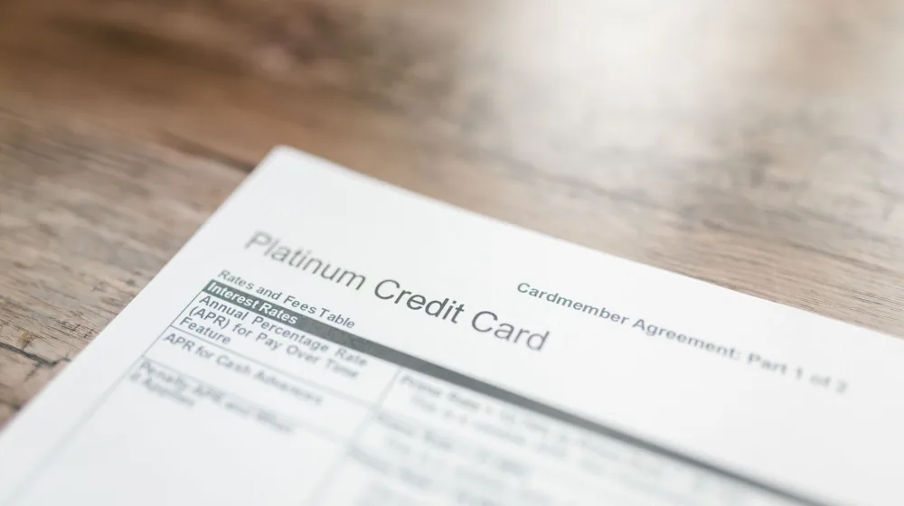

카드론? 현금서비스? 헷갈린다면 손실 피하는 선택 전략
사진: RDNE Stock project / Pexels (무료 이미지, 출처 표기)
카드론과 현금서비스, 헷갈리지 않고 손실 없이 이용하는 법

급하게 돈이 필요할 때, 신용카드 기반 대출 상품인 카드론과 현금서비스를 떠올리곤 합니다. 하지만 이 둘의 차이점을 명확히 이해하지 못하면 불필요한 이자를 지불하거나 신용점수에 예상치 못한 타격을 받을 수 있습니다. 이 글에서는 카드론과 현금서비스의 핵심 차이점을 짚어보고, 신용점수 영향, 현명한 선택 방법, 그리고 이자 부담을 줄이는 상환 전략까지 자세히 안내해 드립니다.
카드론 vs. 현금서비스, 핵심 차이점 한눈에 비교하기
카드론(장기카드대출)과 현금서비스(단기카드대출)는 이름처럼 대출 기간에서 가장 큰 차이를 보입니다. 이는 이자율, 신용점수 영향, 그리고 이용 가능 금액에도 영향을 미칩니다. 주요 차이점을 다음 표로 비교해 보십시오.
신용점수에 미치는 영향: 무엇이 더 치명적일까?
두 상품 모두 신용카드 이용 내역으로 금융기관에 기록되어 신용점수에 영향을 미칩니다. 일반적으로 카드론은 대출로 분류되어 신용점수에 직접적인 영향을 주지만, 현금서비스는 단기 대출임에도 불구하고 반복적으로 이용하거나 상환 기일을 놓칠 경우 신용점수 하락 폭이 카드론보다 클 수 있습니다.
특히 현금서비스는 대출 건수가 많아 보이기 때문에 연체 이력이 없더라도 신용평가 시 부정적인 요인으로 작용할 가능성이 있습니다. 금융감독원에서도 현금서비스의 잦은 이용은 신용도를 떨어뜨릴 수 있다고 경고합니다. 따라서 급전이 필요하더라도 현금서비스를 습관적으로 이용하는 것은 피해야 합니다.
내게 맞는 상품은? 현명한 선택을 위한 체크리스트
어떤 상품을 선택할지는 필요한 금액, 상환 기간, 본인의 신용점수 등을 종합적으로 고려해야 합니다. 다음 체크리스트를 참고하여 본인에게 유리한 상품을 선택해 보세요.
- 필요 금액이 소액(수십만 원)이고 단기간 내 상환 가능한가?
→ 현금서비스가 대안이 될 수 있으나, 이자율이 높고 신용도 하락 위험이 있으니 신중해야 합니다. - 필요 금액이 크고(백만 원 이상) 상환 기간이 수개월 이상 필요한가?
→ 카드론이 비교적 낮은 이자율과 유연한 상환 방식 때문에 더 적합할 수 있습니다. - 나의 현재 신용점수는 몇 점인가?
→ 신용점수가 높을수록 카드론 금리 인하에 유리하며, 현금서비스 이용 시 신용점수 하락 폭이 클 수 있음을 인지해야 합니다. - 향후 다른 대출(주택담보대출 등) 계획이 있는가?
→ 신용점수에 미치는 영향이 큰 단기 대출(현금서비스)은 가급적 피하는 것이 좋습니다.
이자 부담 줄이는 현금서비스·카드론 상환 전략
두 상품 모두 급할 때 유용하지만, 이자 부담이 적지 않으므로 현명한 상환 전략이 필요합니다.
현금서비스 상환 전략
- 가급적 빠른 상환: 현금서비스는 일별 이자가 부과되므로, 다음 결제일까지 기다리지 않고 여유 자금이 생기는 즉시 상환하는 것이 이자 절약에 가장 효과적입니다.
- 리볼빙은 최후의 수단: 결제일에 현금서비스 대금을 상환하기 어렵다면, 리볼빙(일부 결제금액 이월 약정)을 고려할 수 있습니다. 하지만 리볼빙은 이자율이 매우 높고 신용도에 부정적인 영향을 줄 수 있으므로, 최종 선택 전에 상환 계획을 면밀히 검토해야 합니다.
카드론 상환 전략
- 금리 할인 조건 확인: 대출 신청 전후로 카드사에서 제공하는 금리 할인 이벤트나 우대 조건을 꼼꼼히 확인하세요. 급여 이체, 자동이체 설정 등으로 금리 할인을 받을 수 있는 경우가 있습니다.
- 중도상환 수수료 확인 후 조기 상환: 카드론은 중도상환 수수료가 없는 경우가 많으므로, 여유 자금이 생기면 조기 상환하여 이자 부담을 줄이는 것을 적극적으로 고려해 보십시오. 계약 조건을 반드시 확인해야 합니다.
- DSR(총부채원리금상환비율) 관리: 카드론을 포함한 모든 대출은 DSR에 영향을 미칩니다. 자신의 소득 대비 대출 원리금 상환액이 과도하지 않은지 주기적으로 점검하여 상환 능력을 초과하는 대출은 피해야 합니다.
이용 시 반드시 알아야 할 주의사항
카드론과 현금서비스는 편리하지만 다음과 같은 주의사항을 항상 염두에 두어야 합니다.
- 과도한 대출은 금물: 급전을 위해 대출을 이용하더라도, 자신의 상환 능력을 넘어선 과도한 대출은 연체와 신용불량으로 이어질 수 있습니다. 무리한 대출은 피하고 계획적인 소비와 상환을 실천해야 합니다.
- 대부업체 주의: 급전이 필요하다고 해서 제도권 금융기관이 아닌 대부업체나 불법 사금융을 이용하는 것은 절대 피해야 합니다. 상상을 초월하는 고금리와 불법 채권 추심으로 더 큰 피해를 볼 수 있습니다.
- 신용점수 관리의 중요성: 대출 이용 시 신용점수 변동은 불가피합니다. 하지만 연체 없이 성실하게 상환하고, 신용카드 이용 대금 납부일을 잘 지키는 등 꾸준한 신용 관리 노력이 중요합니다.
카드론과 현금서비스 이용에 대한 정확한 정보와 조건은 각 카드사 홈페이지 또는 금융감독원 금융소비자 정보포털 '파인'(fine.fss.or.kr)에서 확인하시길 권장합니다. 2024년 6월 기준으로 작성된 내용이며, 정책 변동이 있을 수 있으니 최신 정보를 꼭 확인하세요.
🔗 이 글도 함께 보면 좋아요: 야구 포수 역할과 경기 승리 핵심 전략 완벽 분석